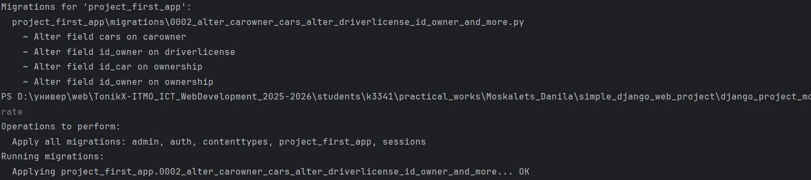
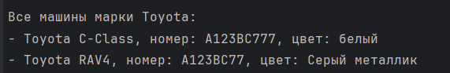
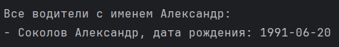
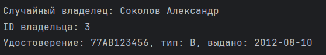
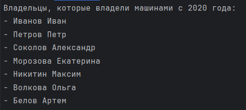
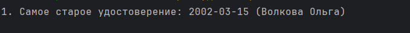
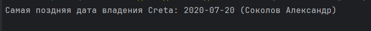
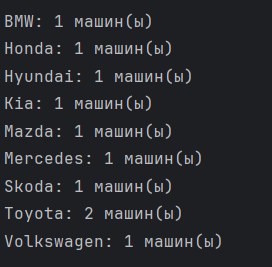
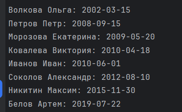

Практическая работа №3.1
Студент: Москалец Данила Алексеевич
Университет: ИТМО
Группа: К3341
Содержание
Задание 1
Проект из практической работы 2:
 models.py проекта: models.py
models.py проекта: models.py
Напишите запрос на создание 6-7 новых автовладельцев и 5-6 автомобилей, каждому автовладельцу назначьте удостоверение и от 1 до 3 автомобилей. Задание можете выполнить либо в интерактивном режиме интерпретатора, либо в отдельном python-файле. Результатом должны стать запросы и отображение созданных объектов.
Решение:
- Добавим related_name для моделей CarOwner, DriverLicense, Ownership, выполним миграции
python manage.py makemigrations
python manage.py migrate

- Запускаем manage.py shell и импортируем модели:
python manage.py shell
from project_first_app.models import *
- Добавляем автомобили, владельцев автомобилей, и водительские удостоверения
CarOwner:
owner1 = CarOwner.objects.create(
last_name="Соколов",
first_name="Александр",
birth_date="1991-06-20"
)
owner2 = CarOwner.objects.create(
last_name="Морозова",
first_name="Екатерина",
birth_date="1987-09-12"
)
owner3 = CarOwner.objects.create(
last_name="Никитин",
first_name="Максим",
birth_date="1993-02-28"
)
owner4 = CarOwner.objects.create(
last_name="Волкова",
first_name="Ольга",
birth_date="1980-12-05"
)
owner5 = CarOwner.objects.create(
last_name="Белов",
first_name="Артем",
birth_date="1996-04-15"
)
owner6 = CarOwner.objects.create(
last_name="Ковалева",
first_name="Виктория",
birth_date="1989-07-30"
)
Car:
car1 = Car.objects.create(
license_plate="А123ВС77",
brand="Toyota",
model="RAV4",
color="Серый металлик"
)
car2 = Car.objects.create(
license_plate="В456ОР77",
brand="Hyundai",
model="Creta",
color="Белый"
)
car3 = Car.objects.create(
license_plate="С789МН77",
brand="Kia",
model="Sportage",
color="Черный"
)
car4 = Car.objects.create(
license_plate="Е012ТУ77",
brand="Volkswagen",
model="Tiguan",
color="Синий"
)
car5 = Car.objects.create(
license_plate="К345ХА77",
brand="Skoda",
model="Kodiaq",
color="Красный"
)
car6 = Car.objects.create(
license_plate="М678РВ77",
brand="Mazda",
model="CX-5",
color="Зеленый"
)
DriverLicense:
license1 = DriverLicense.objects.create(
id_owner=owner1,
license_number="77АВ123456",
license_type="B",
issue_date="2012-08-10"
)
license2 = DriverLicense.objects.create(
id_owner=owner2,
license_number="77СD234567",
license_type="C",
issue_date="2009-05-20"
)
license3 = DriverLicense.objects.create(
id_owner=owner3,
license_number="77EF345678",
license_type="B",
issue_date="2015-11-30"
)
license4 = DriverLicense.objects.create(
id_owner=owner4,
license_number="77GH456789",
license_type="D",
issue_date="2002-03-15"
)
license5 = DriverLicense.objects.create(
id_owner=owner5,
license_number="77IJ567890",
license_type="A",
issue_date="2019-07-22"
)
license6 = DriverLicense.objects.create(
id_owner=owner6,
license_number="77KL678901",
license_type="B",
issue_date="2010-04-18"
)
- Связываем автомобили с владельцами через модель Ownership
owner1.cars.add(car1, through_defaults={
'start_date': '2018-03-15',
'end_date': None
})
owner1.cars.add(car2, through_defaults={
'start_date': '2020-07-20',
'end_date': None
})
owner1.cars.add(car4, through_defaults={
'start_date': '2016-09-10',
'end_date': '2019-12-31'
})
owner2.cars.add(car3, through_defaults={
'start_date': '2015-11-05',
'end_date': None
})
owner2.cars.add(car5, through_defaults={
'start_date': '2021-02-14',
'end_date': None
})
owner3.cars.add(car6, through_defaults={
'start_date': '2022-01-10',
'end_date': None
})
owner4.cars.add(car1, through_defaults={
'start_date': '2014-05-22',
'end_date': '2017-08-30'
})
owner4.cars.add(car2, through_defaults={
'start_date': '2019-01-15',
'end_date': '2020-06-20'
})
owner4.cars.add(car5, through_defaults={
'start_date': '2020-08-01',
'end_date': None
})
owner5.cars.add(car3, through_defaults={
'start_date': '2021-05-30',
'end_date': None
})
owner5.cars.add(car4, through_defaults={
'start_date': '2023-03-10',
'end_date': None
})
owner6.cars.add(car6, through_defaults={
'start_date': '2019-09-25',
'end_date': None
})
- Проверяем, выведем все данные:
1. ВЛАДЕЛЬЦЫ:
Иванов Иван, рожд. 1990-05-15
Петров Петр, рожд. 1985-08-20
Соколов Александр, рожд. 1991-06-20
Морозова Екатерина, рожд. 1987-09-12
Никитин Максим, рожд. 1993-02-28
Волкова Ольга, рожд. 1980-12-05
Белов Артем, рожд. 1996-04-15
Ковалева Виктория, рожд. 1989-07-30
2. АВТОМОБИЛИ:
Toyota C-Class, номер: A123BC777, цвет: белый
BMW Civic, номер: B456DE999, цвет: синий
Honda Camry, номер: C789FG111, цвет: серый
Mercedes X5, номер: D012HI333, цвет: черный
Toyota RAV4, номер: А123ВС77, цвет: Серый металлик
Hyundai Creta, номер: В456ОР77, цвет: Белый
Kia Sportage, номер: С789МН77, цвет: Черный
Volkswagen Tiguan, номер: Е012ТУ77, цвет: Синий
Skoda Kodiaq, номер: К345ХА77, цвет: Красный
Mazda CX-5, номер: М678РВ77, цвет: Зеленый
3. ВОДИТЕЛЬСКИЕ УДОСТОВЕРЕНИЯ:
Иванов Иван: AB1234567 (тип B), выдано 2010-06-01
Петров Петр: CD9876543 (тип B), выдано 2008-09-15
Соколов Александр: 77АВ123456 (тип B), выдано 2012-08-10
Морозова Екатерина: 77СD234567 (тип C), выдано 2009-05-20
Никитин Максим: 77EF345678 (тип B), выдано 2015-11-30
Волкова Ольга: 77GH456789 (тип D), выдано 2002-03-15
Белов Артем: 77IJ567890 (тип A), выдано 2019-07-22
Ковалева Виктория: 77KL678901 (тип B), выдано 2010-04-18
4. ЗАПИСИ О ВЛАДЕНИИ:
Иванов Иван -> Toyota C-Class: с 2020-01-01 по 2021-12-31
Иванов Иван -> Honda Camry: с 2022-01-01 по наст. время
Иванов Иван -> BMW Civic: с 2023-01-01 по наст. время
Петров Петр -> Mercedes X5: с 2019-03-01 по 2020-02-28
Петров Петр -> Toyota C-Class: с 2022-01-01 по 2022-12-31
Петров Петр -> Honda Camry: с 2021-01-01 по 2021-12-31
Соколов Александр -> Toyota RAV4: с 2018-03-15 по наст. время
Соколов Александр -> Hyundai Creta: с 2020-07-20 по наст. время
Соколов Александр -> Volkswagen Tiguan: с 2016-09-10 по 2019-12-31
Морозова Екатерина -> Kia Sportage: с 2015-11-05 по наст. время
Морозова Екатерина -> Skoda Kodiaq: с 2021-02-14 по наст. время
Никитин Максим -> Mazda CX-5: с 2022-01-10 по наст. время
Волкова Ольга -> Toyota RAV4: с 2014-05-22 по 2017-08-30
Волкова Ольга -> Hyundai Creta: с 2019-01-15 по 2020-06-20
Волкова Ольга -> Skoda Kodiaq: с 2020-08-01 по наст. время
Белов Артем -> Kia Sportage: с 2021-05-30 по наст. время
Белов Артем -> Volkswagen Tiguan: с 2023-03-10 по наст. время
Ковалева Виктория -> Mazda CX-5: с 2019-09-25 по наст. время
5. АВТОМОБИЛИ ПО ВЛАДЕЛЬЦАМ:
Иванов Иван: Toyota C-Class, Honda Camry, BMW Civic
Петров Петр: Mercedes X5, Toyota C-Class, Honda Camry
Соколов Александр: Toyota RAV4, Hyundai Creta, Volkswagen Tiguan
Морозова Екатерина: Kia Sportage, Skoda Kodiaq
Никитин Максим: Mazda CX-5
Волкова Ольга: Toyota RAV4, Hyundai Creta, Skoda Kodiaq
Белов Артем: Kia Sportage, Volkswagen Tiguan
Ковалева Виктория: Mazda CX-5
============================================================
КОЛИЧЕСТВО ОБЪЕКТОВ:
Владельцев: 8
Автомобилей: 10
Удостоверений: 8
Записей о владении: 18
============================================================
Задание 2
По созданным в пр.1 данным написать следующие запросы на фильтрацию:
- Где это необходимо, добавьте related_name к полям модели
- Выведете все машины марки “Toyota” (или любой другой марки, которая у вас есть)
- Найти всех водителей с именем “Олег” (или любым другим именем на ваше усмотрение)
- Взяв любого случайного владельца получить его id, и по этому id получить экземпляр удостоверения в виде объекта модели (можно в 2 запроса)
- Вывести всех владельцев красных машин (или любого другого цвета, который у вас присутствует)
- Найти всех владельцев, чей год владения машиной начинается с 2010 (или любой другой год, который присутствует у вас в базе)
Решение:
- Все необходимые related_name были добавлены к полям модели в задании 1
- Выведете все машины марки “Toyota”
toyota_cars = Car.objects.filter(brand="Toyota")
print("Все машины марки Toyota:")
if toyota_cars.exists():
for car in toyota_cars:
print(f"- {car.brand} {car.model}, номер: {car.license_plate}, цвет: {car.color}")
else:
print("- Нет автомобилей марки Toyota")

3. Найти всех водителей с именем “Олег”
alexander_owners = CarOwner.objects.filter(first_name="Александр")
print("\nВсе водители с именем Александр:")
if alexander_owners.exists():
for owner in alexander_owners:
print(f"- {owner.last_name} {owner.first_name}, дата рождения: {owner.birth_date}")
else:
print("- Нет водителей с именем Александр")

4. Взяв любого случайного владельца получить его id, и по этому id получить экземпляр удостоверения в виде объекта модели
import random
all_owners = list(CarOwner.objects.all())
if all_owners:
random_owner = random.choice(all_owners)
print(f"\nСлучайный владелец: {random_owner.last_name} {random_owner.first_name}")
print(f"ID владельца: {random_owner.id_owner}")
try:
license = DriverLicense.objects.get(id_owner_id=random_owner.id_owner)
print(f"Удостоверение: {license.license_number}, тип: {license.license_type}, выдано: {license.issue_date}")
except DriverLicense.DoesNotExist:
print("У владельца нет водительского удостоверения")

5. Вывести всех владельцев белых машин
white_cars = Car.objects.filter(color__icontains="бел")
print("\nЗаписи владения для всех белых машин:")
for car in white_cars:
car_ownerships = car.car_ownerships.all()
if car_ownerships.exists():
print(f"\n{car}:")
for ownership in car_ownerships:
print(f" - {ownership.id_owner}: с {ownership.start_date}")

6. Найти всех владельцев, чей год владения машиной начинается с 2010
owners_since_2020 = CarOwner.objects.filter(
ownerships__start_date__year__gte=2020
).distinct()
print("Владельцы, которые владели машинами с 2020 года:")
for owner in owners_since_2020:
print(f"- {owner.last_name} {owner.first_name}")

Задание 3
Необходимо реализовать следующие запросы c применением описанных методов: Вывод даты выдачи самого старшего водительского удостоверения Укажите самую позднюю дату владения машиной, имеющую какую-то из существующих моделей в вашей базе Выведите количество машин для каждого водителя Подсчитайте количество машин каждой марки Отсортируйте всех автовладельцев по дате выдачи удостоверения (Примечание: чтобы не выводить несколько раз одни и те же записи воспользуйтесь методом .distinct()
- Вывод даты выдачи самого старшего водительского удостоверения
oldest = DriverLicense.objects.earliest('issue_date')
print(f"1. Самое старое удостоверение: {oldest.issue_date} ({oldest.id_owner})")

2. Укажите самую позднюю дату владения машиной, имеющую какую-то из существующих моделей в вашей базе
latest = Ownership.objects.filter(id_car__model="Creta").latest('start_date')
print(f"Самая поздняя дата владения Creta: {latest.start_date} ({latest.id_owner})")

3. Выведите количество машин для каждого водителя
from django.db.models import Count
owners = CarOwner.objects.annotate(num_cars=Count('cars'))
for owner in owners:
print(f"{owner}: {owner.num_cars} машин(ы)")

4. Подсчитайте количество машин каждой марки
brands = Car.objects.values('brand').annotate(total=Count('id'))
for brand in brands:
print(f"{brand['brand']}: {brand['total']} машин(ы)")

5. Отсортируйте всех автовладельцев по дате выдачи удостоверения
from django.db.models import Min
owners_sorted = CarOwner.objects.annotate(
first_license_date=Min('licences__issue_date')
).order_by('first_license_date')
for owner in owners_sorted:
if owner.first_license_date:
print(f"{owner.last_name} {owner.first_name}: {owner.first_license_date}")
else:
print(f"{owner.last_name} {owner.first_name}: нет удостоверения")
